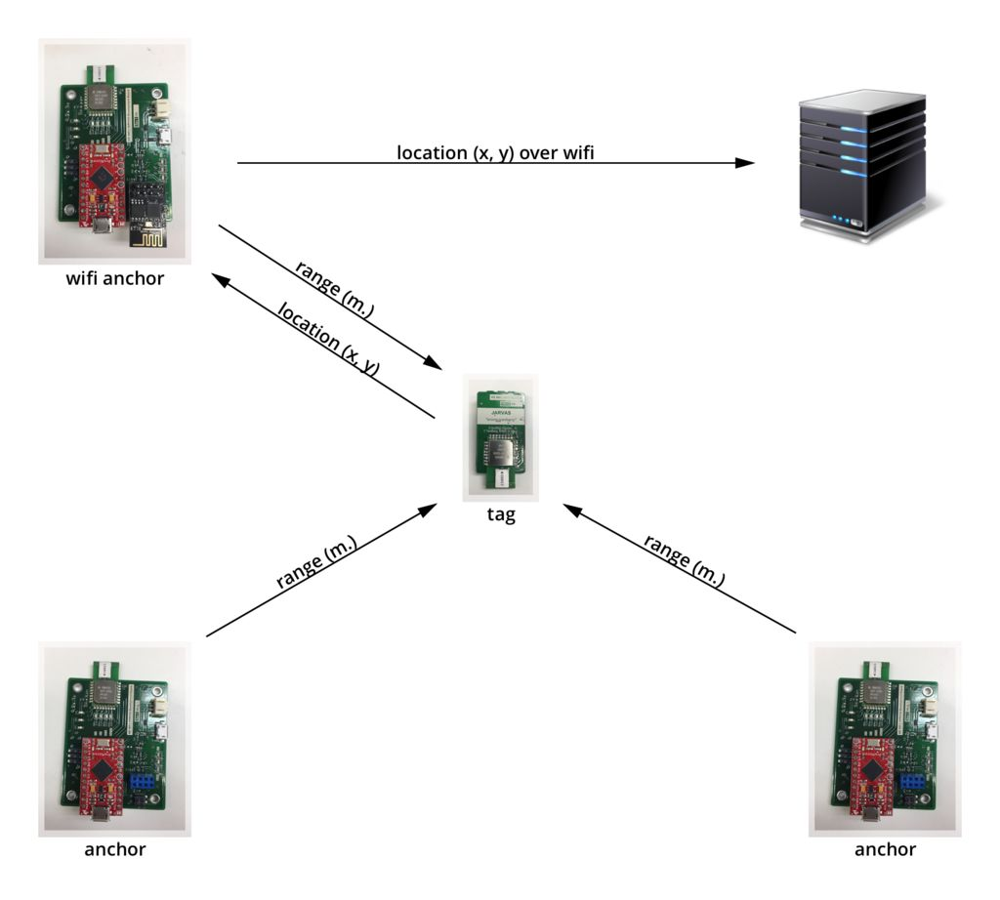

JARVAS Indoor Positioning System

JARVAS (Just A Rather Very Average System) is an indoor positioning system, in which a wearable tag communicates with multiple stationary anchors to determine its position.
How to Build It
Our primary documentatio for how to re-create our setup lives on Instructables.
Source Files
All of our source files (including software, PCB design files, and MATLAB simulation code) live in our GitHub repository.
Technical Details
This website documents some of the more interesting technical aspects of the project. If you're looking to modify, extend, or get inspiration from what we did, read on.